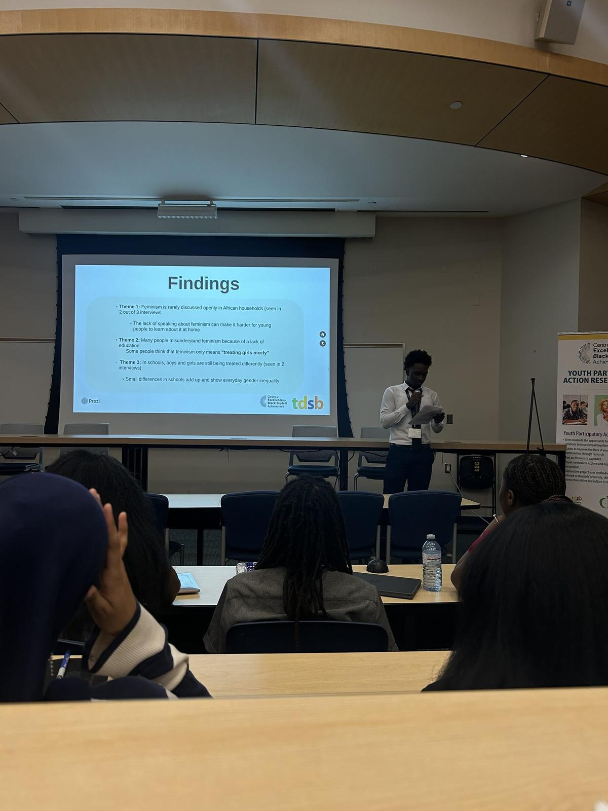
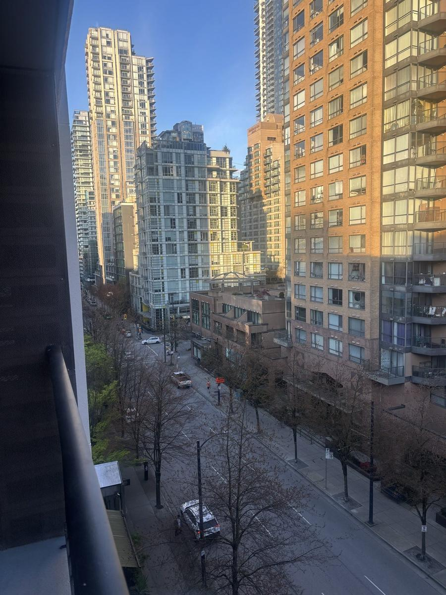
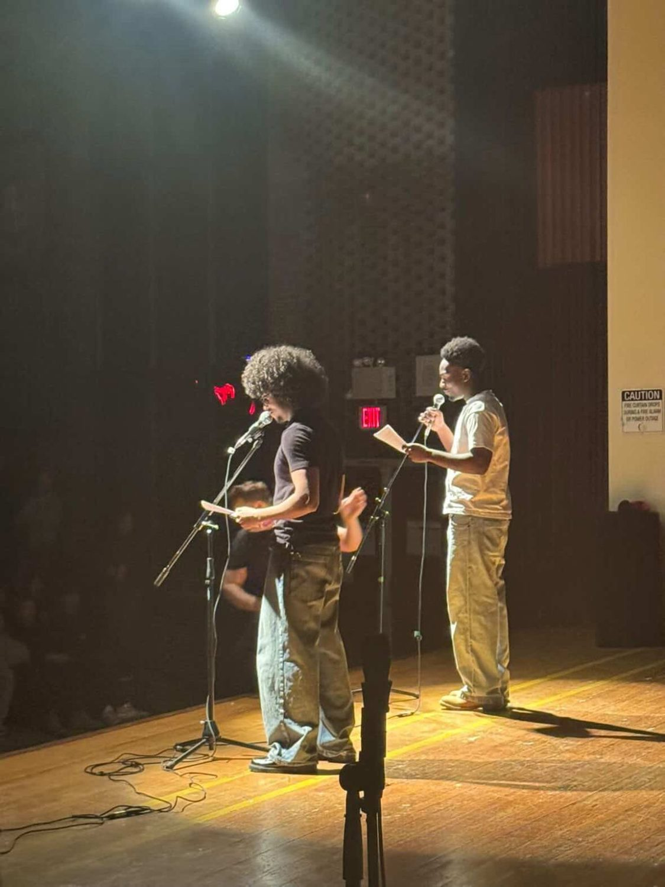

Your voice
Three things you can do on this page. Pick whichever one you want.
Enter your age and travel back to 1912. You will see, right down the page, how old you would have been when each right you already have finally arrived. Nothing you type is saved or sent anywhere.
Start the machine ↓ Read · 1 minuteThe three findings from our 2025 interview study, and where the work has been presented. It was a small qualitative study, and the page says so plainly.
Read the findings ↓ Write · privatePut something into words and keep it. Reflections stay on this device only. Nothing is uploaded, and no other visitor can read them.
Open the reflection wall ↓The research behind this site
In August 2025 we ran a youth participatory action research study with the TDSB Centre of Excellence for Black Student Achievement. It was qualitative and small: three semi-structured interviews, chosen by convenience sampling. Read it as a signal worth chasing, not as a measurement of all students.
Two of the three participants said feminism was rarely or never discussed at home, both from African households. If the conversation never starts anywhere, school is the only place left for it.
Raised in two of the three interviews. Not as a grievance, as an observation about who gets encouraged and in which subjects.
And most misunderstanding traced straight back to never being taught it. Both female participants had encountered the idea that feminism just means "treating girls right." It does not, and that gap is most of the reason this site exists.
Presented at the CEBSA YPAR showcase in Toronto, 12 to 15 August 2025, and later at Simon Fraser University in Vancouver. Full method, sample and limits →



Activity · about two minutes
Set your age and the page sends you back to 1912. You will then see, one row at a time, how old you would have been when each right you already have finally arrived in Canada. Every date is sourced.
Your age is never saved or sent anywhere. All of this happens on your screen.
Travelling…
All of that is one lifetime. One girl, waiting. You made it back to 2026.
Write a private reflection ↓Write · private to this device
Somewhere to put it into words. What you write stays on this device.
What happens to what you write Read the full rules →
A shared, moderated wall is planned. If it is ever built, it will open with its own clear rules, and it will not quietly turn these private notes public.
Not sure where to start? These are prompts, not other people's posts.
Be gentle with yourself here. If something is heavy, the numbers below are free, confidential and open right now.
Kids Help Phone: text CONNECT to 686868, or call 1-800-668-6868. Suicide Crisis Helpline: call or text 988.